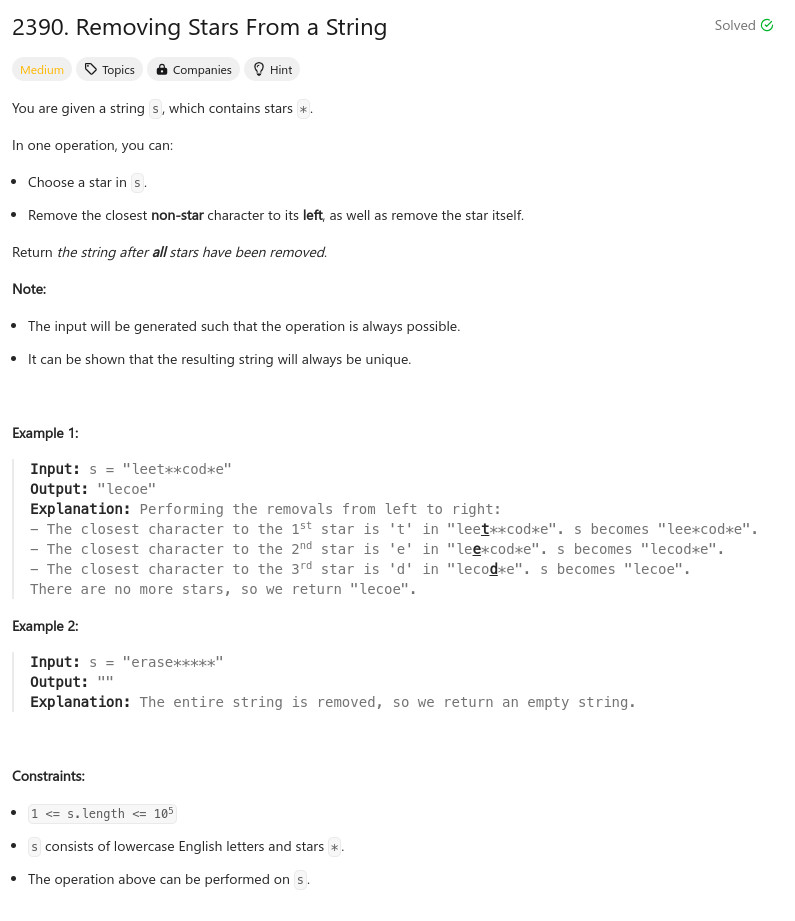

參考資訊：
https://shengyu7697.github.io/std-deque/
題目：

class Solution {
public:
string removeStars(string s) {
std::deque<char> r;
for (char ch : s) {
if (ch == '*') {
r.pop_back();
}
else {
r.push_back(ch);
}
}
return std::string(r.begin(), r.end());
}
};